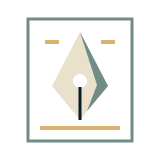

이전 오프닝 로고 · 미적용 초안
Production Gonsama와 Ethan.J Studio.
본편의 남색·상아색을 바탕으로, 두 제작사가 함께 쓰는 문양과 글자를 비교합니다.
A
철이 펼치는 항로
감긴 코일과 이어지는 띠.
G는 코일의 단면으로,
EJ는 가공된 철의 선으로.
Production Gonsama
Ethan.J Studio
B
한 권의 새로운 세계
책장을 여는 제작사와
그 세계를 그리는 펜촉.
옛 전략 게임 패키지의 인장.
추천 · 두 이름의 역할이
서로 다른 그림으로 읽힙니다.
서로 다른 그림으로 읽힙니다.
Production Gonsama

Ethan.J Studio
C
이름을 새기다
PG와 EJ를 겹친 활자.
담백한 명조와 두 색만으로
제작사의 이름을 남깁니다.